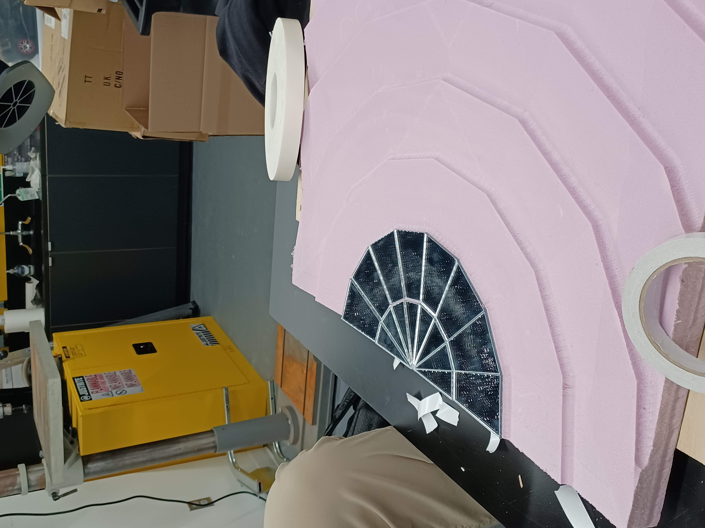
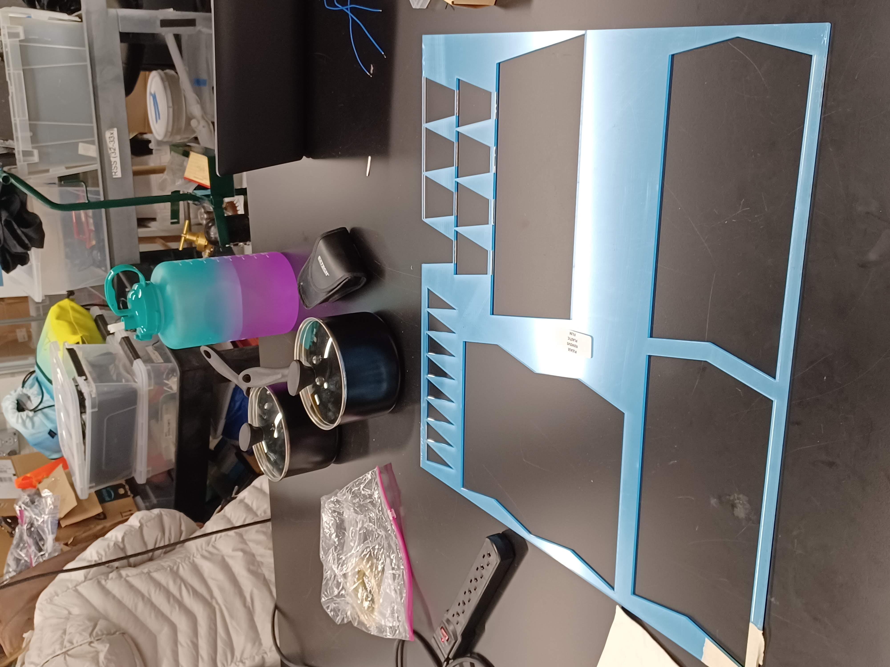
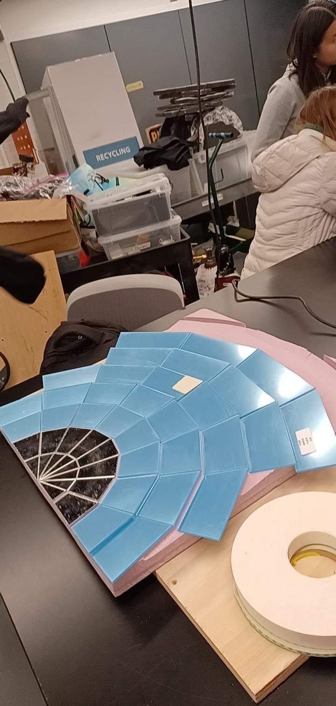
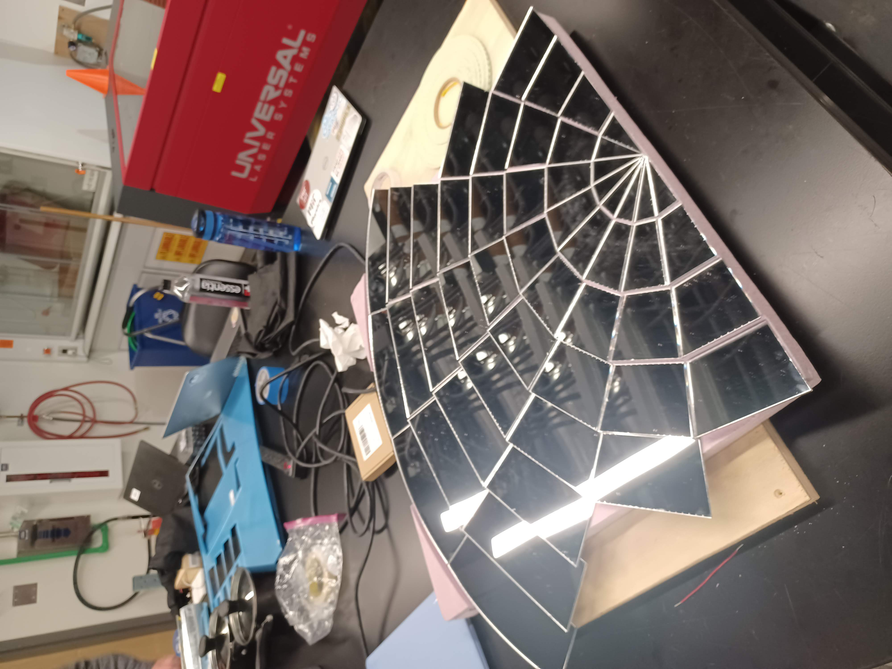
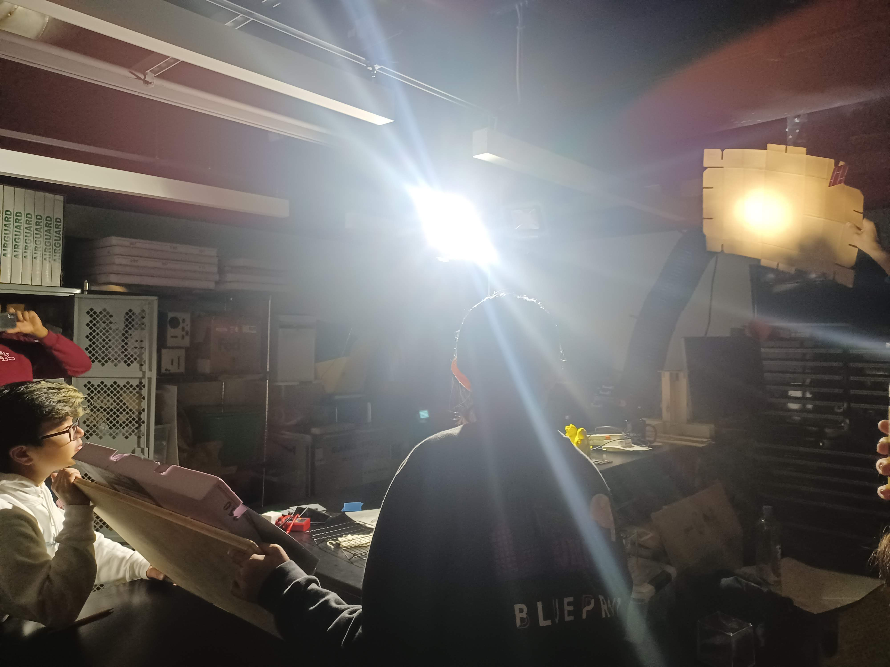
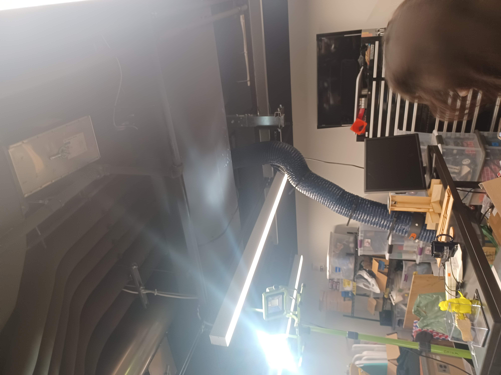
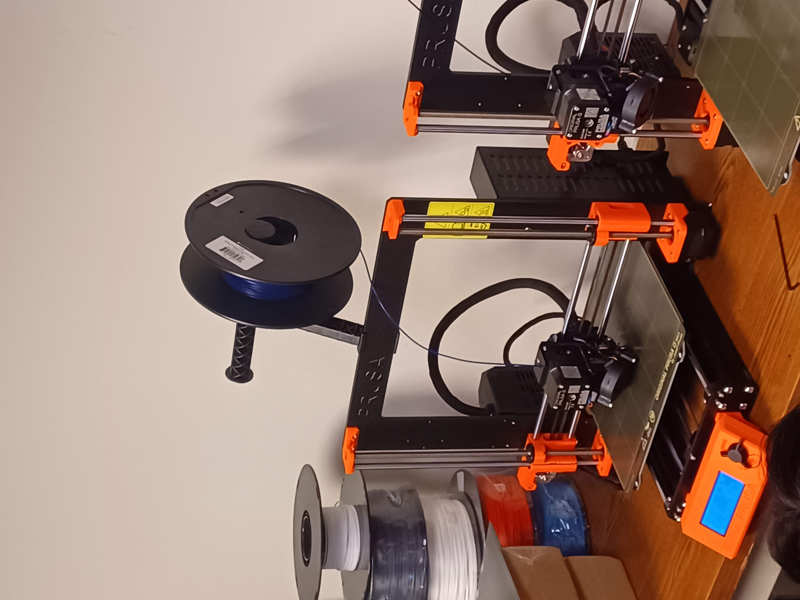

### Week 5: Building the Fresnel Reflector
##### _Monday, October 3_
With the weather taking a turn for the worse, we returned to working on the specific components of our prototype cooker. Noah, Xavier, and I returned to laser cutting the rest of the reflector pieces, and we also taped them to the foam stand. We finished all but one row of the reflector.



##### _Wednesday, October 5_
We finished the laser cutting of the reflector pieces. The finished reflector looks like this:

We did some impromptu testing of the light scattering of the reflector, and observed the focal point of the light to gauge how far away the cooking element should be when we begin testing.


We then turned to the moving mechanism for the cooker. We went down to 3-001 to learn how to use the 3D printers, and we began the printing of the remaining parts. A few of us (me included) were assigned to begin the assemblage of the moving mechanism.
Here is a picture of one of the parts printing:

[Head back to the home page](../index.html).